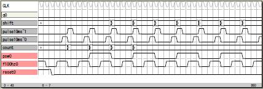

| 4 |
チャタリング回避
チャタリングを回避する論理です。
スイッチを入力するシフトレジスタの全ビットが1か0
のとき計数を増やします、そうでないときは計数を0
にします。
計数が10に達したときスイッチの入力を確定させます。
この論理はチップCLKとは別に低周波のCLKを入力して
駆動させます。内部で分周したものでも構いません。
file: sample12

論理譜
logicname yahoo13
entity main
input reset;
input f100hz;
input psw;
output q;
bitr shift[2];
bitr pulse10ms[2];
bitr count[4];
bitr pswreg;
output T0P[2]; T0P=shift;
output T1P[2]; T1P=pulse10ms;
output T2P[4]; T2P=count;
if (reset)
pulse10ms=0;
else
switch(pulse10ms)
case 0:
if (f100hz) pulse10ms=1; endif
case 1:
pulse10ms=2;
case 2:
if (f100hz)
pulse10ms=pulse10ms;
else
pulse10ms=0;
endif
endswitch
endif
if (reset)
shift=0;
else
if (pulse10ms.0)
shift.0=psw;
shift.1=shift.0;
else
shift=shift;
endif
endif
if (reset)
count=0;
else
if (pulse10ms.0)
if ((shift==0)|(shift==3))
if (count==10)
count=count;
else
count=count+1;
endif
else
count=0;
endif
else
count=count;
endif
endif
if (count==10)
switch(shift)
case 0: pswreg=0;
case 1: pswreg=pswreg;
case 2: pswreg=pswreg;
case 3: pswreg=1;
endswitch
else
pswreg=pswreg;
endif
q=pswreg;
ende
entity sim
output reset;
output f100hz;
output psw;
output q;
bitr tc[8];
part main(reset,f100hz,psw,q)
tc=tc+1;
if (tc<5) reset=1; endif
f100hz=tc.1;
if ((tc>10)&(tc<50)) psw=tc.2; endif
if ((tc>50)&(tc<110)) psw=1; endif
if ((tc>110)&(tc<150)) psw=tc.2; endif
ende
endlogic
|
|
6 |